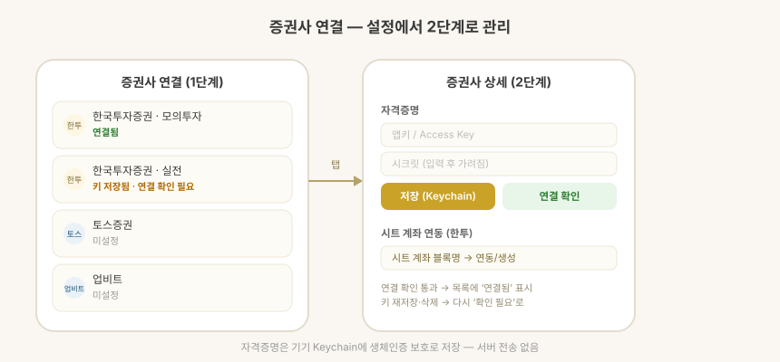

지원 방식: 앱에 직접 입력
증권사 연결은 잔고를 읽어오는 용도입니다. 이 앱은 주문을 넣지 않습니다.

연결 절차 (공통)
- 키 저장 — 증권사에서 발급한 API 키를 입력하면 기기 Keychain에 생체인증(Face ID/Touch ID) 보호로 저장됩니다. 서버에 올라가지 않습니다.
- 연결 확인 — 실제 API 호출로 키가 유효한지 즉시 테스트합니다.
- 연결 확인을 통과해야 목록에 연결됨으로 표시됩니다. 키를 새로 저장하거나 삭제하면 다시 확인 전 상태로 돌아갑니다.
| 상태 | 의미 |
|---|---|
| 미설정 | 키 없음 |
| 키 저장됨 · 연결 확인 필요 | 키는 있지만 연결 테스트 미통과 |
| 연결됨 | 연결 확인 성공 |
지원 증권사
| 증권사 | 넣는 키 | 연결 확인 방식 | 잔고 조회 |
|---|---|---|---|
| 한국투자증권 · 실전 | App Key · App Secret | 토큰 발급 | ✅ 보유 종목·평단·예수금 |
| 한국투자증권 · 모의투자 | App Key · App Secret | 토큰 발급 | ✅ 보유 종목·평단·예수금 |
| 업비트 | Access Key · Secret Key | 계좌 조회 (JWT 서명) | ✅ 코인 보유·KRW 예수금 |
| 바이낸스 | API Key · Secret Key | 계좌 조회 (HMAC 서명) | ✅ 코인 보유 |
| 토스증권 | Client ID · Client Secret | OAuth2 토큰 발급 | 🔜 준비 중 |
| 키움증권 (1.3.0 · iPhone · iPad · Mac) | App Key · Secret Key | 토큰 발급 | 🔜 준비 중 |
업비트·바이낸스 연결 확인은 키에 등록된 IP에서만 성공합니다. 키움증권은 실전 키만 지원합니다 — 모의투자 키는 연결 확인에 실패합니다.
키를 어디서 받나요
1.3.0부터, iPhone · iPad · Mac. 각 증권사 화면에 발급 포털로 가는 링크와 한 줄 안내가 붙습니다. Android 앱에는 아직 링크가 없습니다.
| 증권사 | 발급 위치 |
|---|---|
| 한국투자증권 | KIS Developers |
| 토스증권 | 토스증권 계좌로 로그인 후 설정 > Open API |
| 키움증권 | 키움증권 REST API 포털 로그인 후 'API 사용신청' |
| 업비트 | 업비트 로그인 후 마이페이지 > Open API 관리 |
| 바이낸스 | 바이낸스 로그인 후 프로필 > API Management |
거래소 키는 필요한 권한만 켜세요. 업비트는 잔고를 읽는 데 자산조회 권한 하나면 됩니다. 어느 쪽도 출금 권한은 쓰지 않으니 켜지 마세요.
한 계좌에 업비트·바이낸스가 함께 연동돼 있으면, 한쪽을 가져올 때 다른 거래소의 보유 코인을 0으로 밀지 않도록 서로의 보유 종목을 보호합니다.
잔고로 계좌 채우기
iPhone · iPad · Mac. Android 앱은 아직 키 저장과 연결 확인까지만 합니다 — 잔고를 읽어 계좌를 채우는 것은 다음 버전입니다.
증권사 키를 연결하면 보유 종목을 하나씩 입력하는 대신 잔고를 읽어 계좌를 채울 수 있습니다.
계좌·종목 편집 화면에서 계좌마다 증권사에서 가져오기를 누르고 증권사를 고릅니다 (한국투자증권 실전 · 모의, 업비트, 바이낸스). 토스증권 · 키움증권은 연결 확인까지만 됩니다. 보유 종목과 예수금이 잔고에 맞춰지고, 증권사에 없어진 종목은 수량 0으로 남고 새로 생긴 종목은 자동으로 추가됩니다.
한투 계좌 탐색 (iPhone · iPad · Mac)
한투는 앱키 하나로 같은 종합계좌의 상품코드 계좌들 (위탁 01 · 연금저축 22 · 퇴직연금 29 …)을 전부 조회할 수 있습니다. "계좌 탐색"을 누르면 상품코드를 순회해 존재하는 계좌를 모두 나열합니다.
업비트는 키당 계좌가 하나라 단일 연동을 사용합니다.
안전
- API 키는 기기 Keychain에만 저장되며 앱 제공자 서버로 전송되지 않습니다.
- 증권사 서버와의 통신은 기기에서 직접 이루어집니다.
- 계좌번호와 토큰은 화면과 로그에 마스킹되어 표시됩니다.
- 잔고를 가져오면 기존 원장을 덮어쓰므로, 반영 전에 변경 내용을 확인할 수 있습니다.